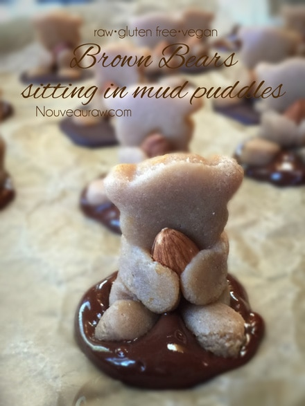
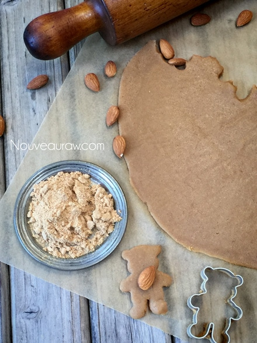
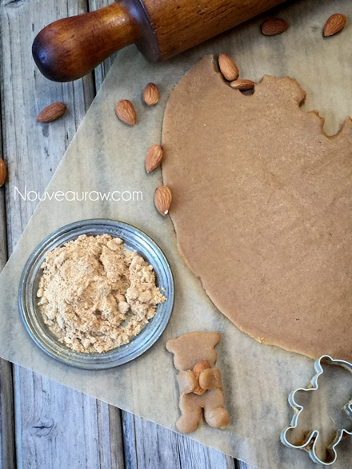
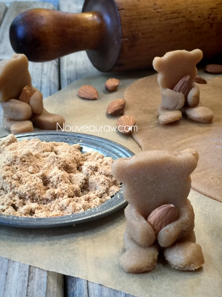
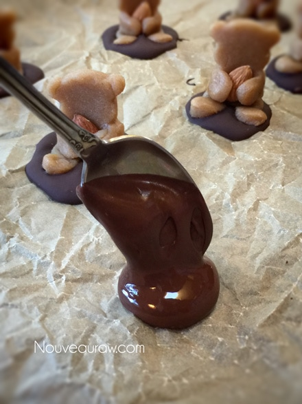
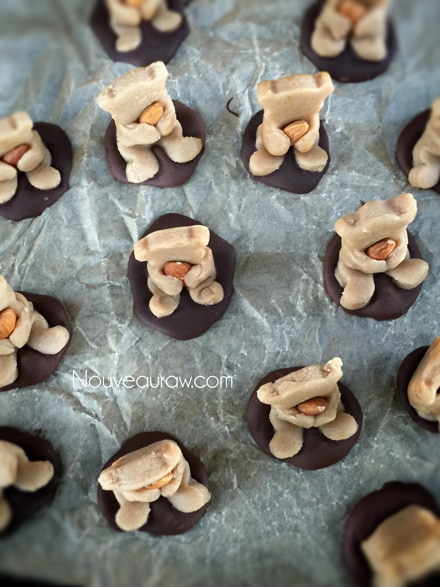
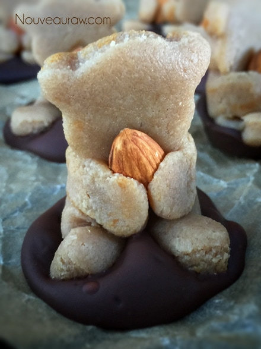

Cuddly Brown Bears in Mud Puddles Cookies

~ raw, vegan, gluten-free ~
Raw, vegan, gluten-free, 3-D cookies. How much fun is that! Who says that cookies have to be flat? I had so much joy when making these. My husband walked into the kitchen, and I just couldn’t help sharing my childlike excitement with him. He smiled deeply at me and said that he just loves my inner-child and never to lose it. I guess I won’t be giving up my kitchen culinary career anytime soon. hehe
Let’s talk chocolate mud puddles!
If I were a bear, I would be scooping out each and every mud puddle and just sit in it. I did so as a child so why wouldn’t a bear?! :) Shoot, if I could find a really nice mud puddle today, I would be sitting in it for sure. It wouldn’t even have to be made of chocolate either, though I do like chocolate. Anyway, the chocolate mud puddle is optional; the Bears sit perfectly on their own.
For this dough to turn out you need to use very fine almond flour, not meal (not whole ground almonds). This not only gives the dough a finer finish, but it also helps to make it moldable. You can make raw almond flour yourself… it does take a few steps, but it is worth it in the end. I recommend using pure white almond pulp that has been dehydrated and ground into a flour.
If this isn’t feasible for you, you can purchase processed almond flour. Keep in mind that it isn’t raw. You could also try cashew flour, just make sure that has a very fine texture. It is possible to try oat or buckwheat flour, but I haven’t tested either just yet. I fear that they would be too drying on the pallet, but it’s always worth testing.
I will warn you, this dough is sort of sticky when using this bear cookie cutter. I tried all sorts of things… I first dipped it in hot water before pressing it into the dough, I tried spraying it with oil, I tried dipping it in ground raw coconut crystals… in the end, what I found worked the best was to dip the cutter in almond flour first and then to wash the cutter every so often while pressing out the bears. Oh, and it doesn’t help to curse at it either… tried that (DARN YOU, you DARN cookie cutter)… nope, that didn’t seem to have any effect at all.
For the sweetener, I chose maple syrup. I don’t recommend coconut nectar or honey as they would be too thick and sticky for this particular dough. I created this dough recipe a while back while attempting to find a replacement for fondant (the baker’s dream product in the cooked world). Mind you I said product… there isn’t anything food-wise about fondant. Ack. But it makes for beautiful food displays and decorating. If you are looking for a fun way to use these cookies, check out my Cuddly Brown Bear Cupcakes with Orange Blossom Frosting. Enjoy and please keep in touch if you give this recipe a try. It means a lot to hear from those who visit my site. Blessings!
Yields 20 cookies
- 2 cups fine almond flour, raw or purchased
- 6 Tbsp maple syrup
- One tsp vanilla or maple extract
- 1 tsp ground Ceylon cinnamon
- 20 whole almonds
- Hardening chocolate (optional) raw or purchased
Preparation:
- In the food processor, fitted with the “S” blade, combine the almond flour, sweetener, vanilla, and cinnamon.
- Process until the batter is smooth and starts to gather in a ball form as the blades spin.
- Gather the dough and shape it into a ball.
- Lay a piece of parchment paper on the countertop and place the dough ball in the center.
- Lay another sheet of parchment paper on top.
- Roll out to about 1/4 inch thick.
- Thicker dough creates chubby bears which have more character than thin doughed ones.
- Dip the cookie cutter into almond flour, then press into the dough.
- I noticed that if I washed the cookie cutter a few times throughout the process that it helped with the sticking issue.
- This dough is sticky and takes a little patience in getting it out of the cookie cutter. I used the end of a pen to push the paws out.
- It will look a little rough at first, but just flip the cookie over and use the other side which should be plump and flawless.
- Place an almond on the chest area and gather the arms around it, lightly pressing them together as though the bear is holding the almond.
- Lift the bear into your hand and fold the bear into a sitting position. Don’t be afraid to have some of them leaning to the side, more forward, etc. It gives them character.
- After preparing the hardening chocolate, place a teaspoonful’s worth on the parchment paper and set the bear in the center of it, pressing down lightly so some of the chocolate squishes up around the bear, giving the appearance of sitting in a mud puddle. Set aside or in the fridge for the chocolate to harden.
__________________________________________________________________
Here are a few photos to show you what did. Hard to capture it all with one hand,
but I did my best. The plate to the left in the photo is almond flour.
Dip the cookie cutter in it before pressing it into the dough. As I mentioned
above, it takes a little patience getting the bears out of the cutter.
You will see finger markings, etc. That’s ok, just flip it over and you
should see a beautiful bear. Like you see below. Place an almond on its chest.

Gently press the arms around the almond as though the bear
is hugging it.

Fold them into a sitting position. Let some of them lean to the
side or forward to give them character.

Place a teaspoonful of chocolate on the parchment paper.

Nestle the little bear in the puddle & set aside for the chocolate to
harden. As you can see the chocolate shifts color as it hardens.


© AmieSue.com